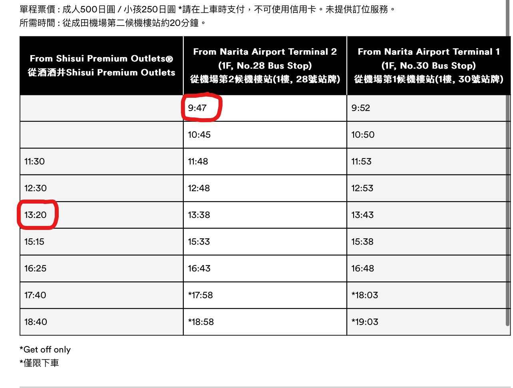

Day1 6/25 (日) 起程
抵達日本後找地方寄放行李，去酒酒井Outlet逛街吃午餐，回來接阿嬤他們前往澀谷。
行李寄放澀谷站之後吃個一蘭或漢堡，再出發去shibuya sky看日落。
晚上去逛逛超市買點消夜，checkin入住，結束第一天的行程～
p.s.記得買牛奶、優格等每天都想吃的東西！
去程
三姊妹 日本捷星航空(jetstar)
(TW)桃園機場 02:40 - (JP)成田機場 07:00
千葉酒酒井Outlet
營業時間：早上10點開門，交通方式圖解教學
- 電子優惠券：手機掃描場內展示的QRcode
- 紙本優惠券：前往information Center出示護照
- 退稅櫃台在information center右邊
- Google地圖
- 機場巴士車程20分鐘，票價500日圓，下巴士時支付。
第一航廈1樓搭車處：30號站牌
第二航廈1樓搭車處：28號站牌
搭乘時間→第二航廈9：47發車，13：20回程

- 13:40左右回到機場等阿華姊妹花
阿華姊妹+阿妞 華航
(TW)桃園機場 08:50 - (JP)成田機場 13:15
Suica Card
目前「WelcomeSuica」、「PASMO PASSPORT」卡片在成田機場、東京車站等JR東日本的旅行服務中心均有販售，使用期限為28天，無須押金，但加值後未使用完畢的餘額無法退款，卡片期效滿後，可帶回家作為紀念。
想問問房東能不能提早放行李，或是先將行李寄放在東松戶站
- 假設2點接到阿嬤
- 方案一：直接前往澀谷
- 轉車0次 1小時14分 3248日元/人（14:21-15:35）
- 轉車1次 1小時29分 2766日元/人（14:13-15:42）
- 轉車2次 1小時42分 1466日元/人（14:04-15:46）
- 方案二：東松戶寄放行李後直接前往澀谷
- 往東松戶有兩班，14:04-14:38/14:44-15:18（34分鐘）
- 東松戶往澀谷最早16:10最晚16:40以前一定會到（車程1小時）
- 票價大約1424-1773日元/人
- 方案三：住處放行李混一下後前往澀谷
- 跟方案二一樣，選最晚班次預估，若可以寄放行李在住處則大約16:00一定要離開，剛好卡17:20入場

這幾天的家：ReLa Higashi Matsudo
| 東松戶站 Google地圖 |
| 有電梯，距離捷運站走路3分鐘 |

Shibuya Sky
| 澀谷站 Google地圖 |
| 14/45/46樓 |
從東松戶出發大概要花1個小時=大約下午4點要從住處出發
門票入場時間 17:20
當天日落時間 19:00
晚餐：一蘭 澀谷西班牙坂店（渋谷スペイン坂店）
| 澀谷站 Google地圖 |
| コヤスワン B1F |
| 距離shibuya sky最近的一蘭，走路7分鐘 |
Shogun Burger Shibuya
| 澀谷站 Google地圖 |
| Kokusai Bldg. A, １階 |
| 距離shibuya sky走路4分鐘 |
| 營業時間：11:30-21:00 |
Burger PRINCE
| 澀谷站Google地圖 |
| 距離shibuya sky走路12分鐘 |
| 營業時間：12:00–15:30/17:00–22:00 |
Day2 6/26 (一) 原宿
東松戶到原宿要1小時。吃個早午餐之後去原宿逛街。（也可以早餐隨便吃吃，中午去排Afuri吃柚子鹽拉麵，附近沒漢堡哈哈）可以去附近明治神宮晃晃。晚餐新宿站六歌仙燒肉吃到飽。
早午餐：夏威夷早餐 Egg 'n Things
| 原宿站 Google地圖 |
| 捷運站走過去5分鐘 |
| 可透過Google訂位 |
AFURI 原宿
| 原宿站 Google地圖 |
| 捷運站走過去2分鐘 |
| 營業時間：11:00-22:30 |
可以10:40左右去排隊，注意！！結帳只能信用卡或行動支付。
竹下通、表參道逛街
| 原宿站 |
| 竹下通較靠近捷運站，表參道要再走一段路 |
晚餐：燒肉亭 六歌仙 新宿西口1號店
| 新宿西口站 Google地圖 |
| 新宿サンフラワービル 6F/7F |
原宿站至此站需12分鐘，從捷運站走過去需2分鐘
訂位時間：18:00
月之宴，用餐時間90分鐘
Day3 6/27 (二) 澀谷
今天吃飯都在澀谷車站附近，可以在附近晃晃（也可以美登利改天吃，下午去別的地方）
午餐：挽肉と米 渋谷店
| 澀谷站 Google地圖 |
| 椎津ビル ３F |
早上08:00開始發放整理券
晚餐：梅丘 寿司の美登利 渋谷店
| 澀谷站 Google地圖 |
| マークシティイースト ４Ｆ |
現場候位，要早點去那邊登記
Day4 6/28 (三) 迪士尼
迪士尼樂園
| 舞濱站 Google地圖 |
| 搭車大約30分鐘 |
表定時間8:00開始營業，建議早到。22:00關門
遊行或設施還沒查
| 白天遊行 | 15:45 |
| 晚上遊行 | 19:30 |
| 煙火 | 20:40 |
Day5 6/29 (四)富士山
富士急樂園
河口湖看富士山
忍野八海
風穴、冰穴??
Day6 6/30 (五) 築地市場 + 台場
築地場外市場
台場
Day7 7/1 (六) 到處吃吃?
早餐
午餐
晚餐
Day8 7/2 (日)
這天大概是藥妝店、uniqlo、唐吉訶德之旅
早餐
午餐
晚餐
Day9 7/3 (一) 伴手禮
伴手禮
- 福砂屋
- 高島屋
NewYork Perfect Cheese
中午就會完售，建議一大早就去排隊 攻略
東京車站店
| 東京車站1樓 丸之內南口檢票口內 Google地圖 |
| 東京車站 |
| 營業時間:08:00-22:00 |
京王百貨店
| 京王百貨1樓 Google地圖 |
| 新宿站 |
| 買完可以到樓上百貨公司的退稅櫃台辦理退稅 |
| 營業時間:10:00-20:00 |
Press Butter Sand焦糖奶油夾心餅乾
大丸東京店
| 東京車站B1 Google地圖 |
| 東京車站 |
| 營業時間:10:00-20:00 |
新宿店
| LUMINE EST新宿B1 Google地圖 |
| 新宿站 |
| 營業時間:平日11:00-21:00 假日10:30-21:00 |
成田機場店
| 成田機場第二航廈4樓 Google地圖 |
| 營業時間:09:00-17:00 |
| 有抹茶口味，超過5000日圓可以退稅，但是在市區是沒有相關優惠的。 |
Butter no Itoko
新宿店
| LUMINE EST新宿B1 Google地圖 |
| 新宿站 |
| 營業時間:平日11:00-21:00 假日10:30-21:00 |
喫茶店に恋して
東京駅グランスタ店
| GRANSTA東京·GRANSTA丸之內B1 八重洲地下中央口 Google地圖 |
| 東京車站 銀座 |
| 營業時間:08:00-21:00 |
Calbee+薯條店
東京車站布丁
樂天免稅店 東京銀座店
| 有樂町站 Google地圖 |
| 8・9階 東急プラザ銀座 |
| 營業時間:11:00-19:00 |
| 有優惠券 |
晚餐：迴轉壽司 根室花丸 銀座店
| 有樂町站 Google地圖 |
| 東急プラザ銀座 10階 |
| 營業時間:11:00-23:00 現場候位 |
回程
三姊妹航班 日本捷星航空(jetstar)
(JP)成田機場 22:50 - (TW)桃園機場 7/4 01:40
兩老航班 華航
(JP)成田機場 18:20 - (TW)桃園機場 21:10
還沒排進的行程
- Burger prince
- Shake shack
- Shogun burger
- 大塚飯糰
- 明智神宮
- Afuri原宿
- 快速通關
- suica卡、東京周遊券